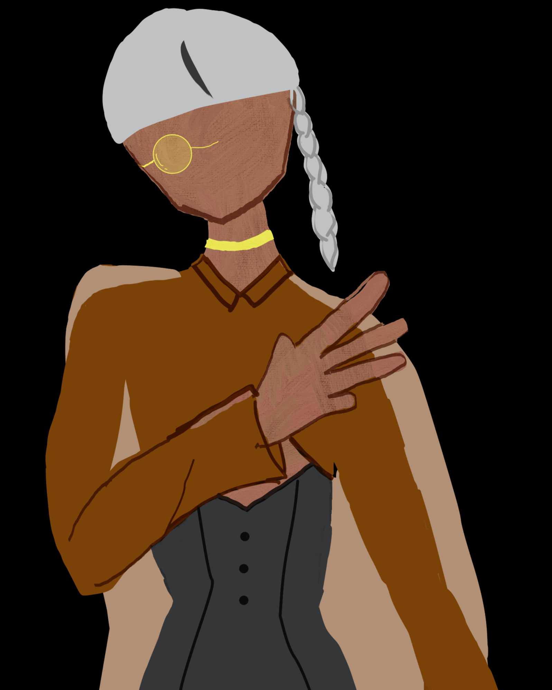
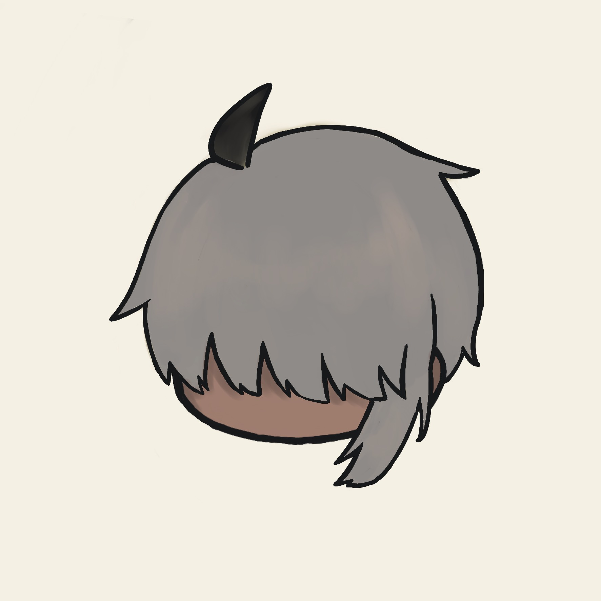
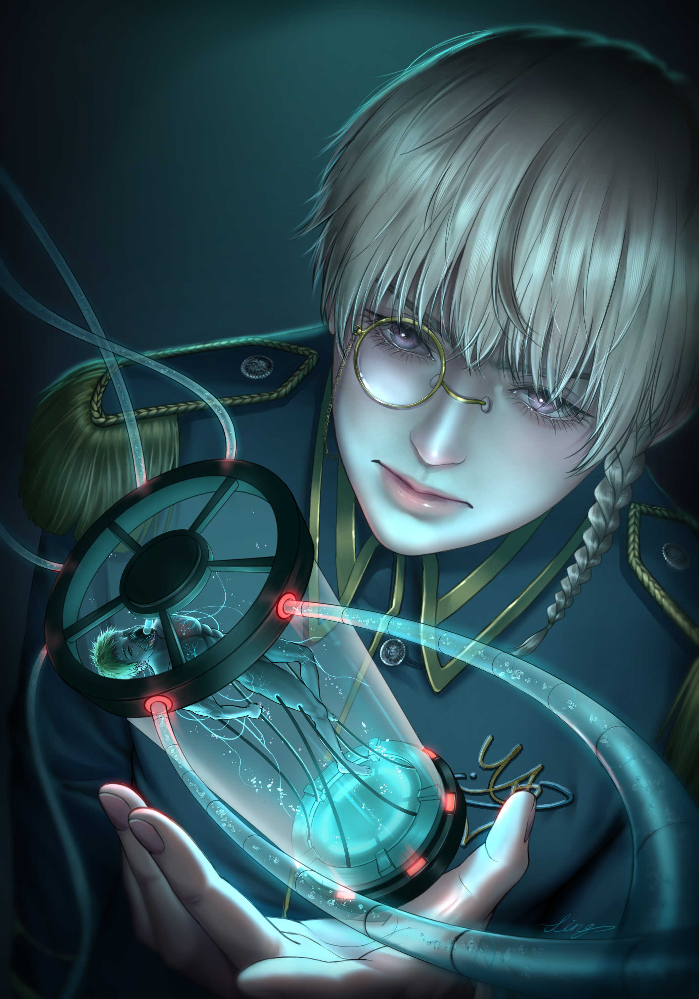
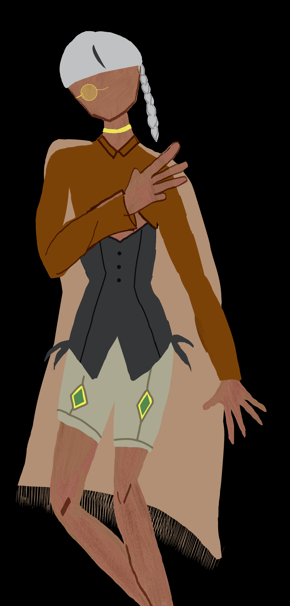

Vosto全域資料庫
Vosto全域資料庫
「糟糕透頂的腐爛。」
安斯艾爾遵從聯邦的指示，被迫殺掉自己的摯友，並且被強硬的塞入帶新人（白雪惜）的任務，在第零綜合支援部當最高指揮官。
| 安斯艾爾 | |
|---|---|
 |
|
| 姓名 | 安斯艾爾 |
| 生日 | ？月？日 |
| 年齡 | 25歲 |
| 性別 | 男 |
| 身體資訊 | 145公分 | 37公斤 |
| 愛好 |
喜靜 看著星空思考 |
| 不喜 |
相當厭惡他人藏他的物品 |
該條目正在施工中。
皮膚因長期日曬而呈現健康的小麥色。儘管身軀看似嬌小，卻力大無窮，手指的指節不怎麼明顯，手掌卻佈滿因長期蒐集物品而留下的厚實粗繭，從不刻意處理，認為繭就是最好的防護，避免受傷的最好屏障。
總是形影不離的帶著一本筆記本，裡面記錄著各種東西，一旦不見便會感到非常焦急。腰間的皮革製皮帶，一邊掛著苦無，另一邊則裝著從各處蒐集來的小物品，扣環藏在後方。晚上睡覺時，他會將皮帶卸下。
一條金色頸環配戴在脖子上。頭髮顏色是灰金色中帶點白色，長度及耳朵，只有左邊一小搓頭髮垂至肩膀。瀏海有時會蓋住雙眼，讓人看不清表情，但前方有一小撮染成純黑的呆毛俏皮地往前翹著。右眼戴著單邊眼鏡，這是為了矯正弱視，因為他左眼的視力其實非常好，嘴巴上總是帶著淺淺的微笑，配上小巧的鼻子，而淡粉紅色的瞳孔則隱藏在瀏海之下。
服裝：．一套兩件式的服裝，內層是一件淡棕色的連身袖套，能直接穿上，並與領子相連接，長度至手腕，末端垂著兩條鬚飾。外層是一件深綠色馬甲，設計貼身，能凸顯他的身體線條，並以淺綠色鈕扣從前方扣上。
下身是一條蓬鬆的短褲，褲面上繪有綠色系的菱形圖案，菱形則以金色線條勾勒。腳上穿著一雙黑色筒靴，靴筒後方有拉鍊，拉鍊拉下後可向兩邊翻折，並繫上黑色鞋帶。
擁有兩件不同材質的披風。一件是純白的厚實羊毛披風，能讓他在冬天保持溫暖；另一件則是黃棕色的輕薄披風。兩件披風的共通點是內裡縫有多個小型口袋，方便置放各種小物件。較大的物品則會收納在背包裡。披風的下擺處，還綴有一整排的流蘇。
一個大型背包。背包開口處以布料捲起收納，需要開啟時只需將布料展開即可。關閉後，則有兩條皮帶從上方垂下，以金屬扣環固定。背包兩側和中央都設計有小口袋，用來放置水壺、果實等隨身物品。背包的右邊肩帶上還縫製了一個小口袋，專門用來收納指南針。
表面上，他是一個對任何事情都笑笑帶過、看似無知的人，但其實心裡對一切都了然於心。一旦有人讓他吃虧或感到不快，就會在背後加倍奉還，狠狠地報復回去。僅管對手心知肚明是他所為，卻苦無證據只能氣的跺腳，自認倒楣。
喜怒不形於色，行事穩重且小心謹慎。在行動前，習慣將所有細節逐一條列成待辦清單；而在緊張時，會無意識地咬指甲，這個習慣連他本人都未曾察覺。
為了達成目而不擇手段，其中，「裝可愛」是他最常使用的招數。畢竟，矮小的身高為他的可愛特質大大加分，他很懂得利用自身優勢來贏得勝利，不過他不會對白雪惜這麼做。不喜歡戰鬥，若非處於不敗之地，會選擇第一個否則會逃跑，不過若是聯邦的指令也只能遵守。一旦遇上感興趣的事物，便會輕易沉迷其中，能在無聊時用葉子吹奏自己創作的歌曲。
其實不喜歡與人打交道，但為了生活上的便利，他仍會去做。多數時候享受著孤身一人的狀態，不喜歡被打擾。在外人眼中，他的評價是個溫文爾雅、談吐得體，甚至有些可愛的人物。然而，只有他自己清楚，事實剛好相反。有著一群跟他一樣「怪裡怪氣」的朋友，因為彼此心照不宣，所以也鮮少交流，反正他覺得沒什麼好說的。
對金錢看得不重，認為生活上過得去就好，但是若遇到真心喜愛的物品，則會拚命存錢。說話方式全端看他的心情，有時殘暴有時諷刺。
自出生就誕生於星際聯邦，是比白雪惜還高的軍官，被高層強迫帶領新人，也就是白雪惜，其實原本並不喜歡他，但後續當中漸漸可以當好朋友。
原發性A-3激素缺乏導致身高矮小，發現時已經錯過了最佳治療的黃金時間，目前每天晚上睡前會使用適量的A-3激素，並於皮下注射。
雖然不會導致成長，但是A-3激素缺乏還是會有其他的問題，例如：軀體過胖、能量減少等……施打以後可以避免這些問題。
艦艇上有備三個月份的的A-3激素。
極其喜愛冒險，有空的時候就會滿世界的跑。
他會自己編曲，使用的樂器是失傳的葉笛。
白雪惜是他的下屬，起初十分厭惡，後來漸漸接納，喜歡逗弄他。
在凱內爾姆（萬事通）身上吃了一些癟，現在替人提供各方面素質良好的軍人做為客戶，對方會回報情報。
澤凡是他從小到他的竹馬朋友，默默的愛慕著，卻遭聯邦強迫抹殺對方。
孟玳卿，好朋友的養子，目前被對方憎恨著，不知道該用什麼表情去面對。

🖼️柳慕縈

